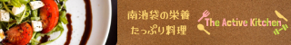
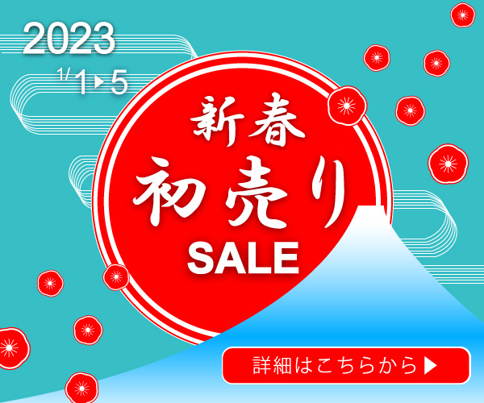
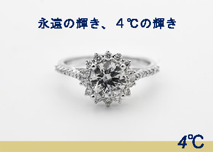
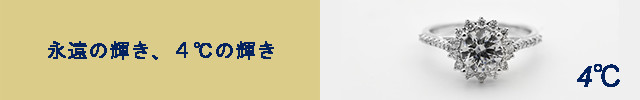

Works





Skill
- HTML / CSS / Sass
SEOについても勉強。正しくタグを使うことが一番大切。Sassが好き。
- JavaScript / jQuery / React
if文、for文。ReactはReact hookを用いたSPAサイトを作成。
- PHP / Laravel
お問い合わせフォーム、LaravelのMVCモデル、データベースとの連携も勉強。
- Photoshop、Illustlater、Figma
お問い合わせフォーム、LaravelのMVCモデル、データベースとの連携も勉強。
Timeline
大学入学時パソコン購入
家でインターネットがつながったので感動。スマホも購入（iPhone4S）。ゲームやネットサーフィンのやりすぎで2年で解約。
ものを作るのが好き
PCを開かない日はない！ブログを解説したり、YouTubeに動画投稿したり、ペンタブを購入して絵を描いたりしている。
The Presentation
2023年5月フェリカテクニカルアカデミー修了。HTML、CSS、jQuery、WordPressなどサイト制作に必要なスキルを学んだ
1年後
AIを使って
AIで人と人をつなぐアプリケーションを作りたい。